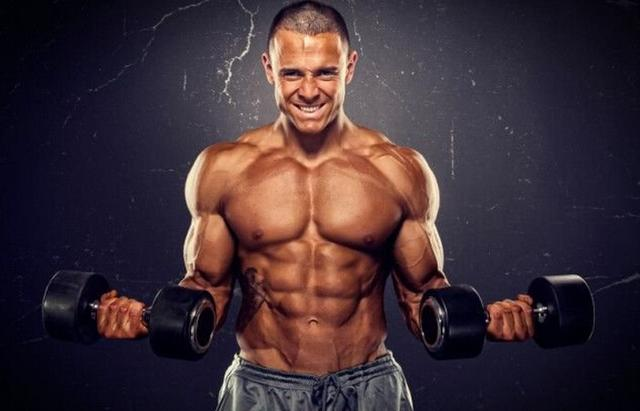

说到举铁，大多健身新手一开始想到的是练胸和手臂，只要你经常训练胸部和手臂，是可以相对较快见到成效的。我们都知道手臂训练主要包括肱二头肌训练和肱三头肌训练，最近有不少朋友向我反映练肱二头肌时容易出现腰酸或者肩酸的情况，为什么会这样呢？
其实，当你练肱二头肌时感觉到腰酸，主要是竖脊肌发力了，尤其是在大重量训练时，我们会惯性用身体前后摇摆借力。至于肩膀酸痛，主要还是动作过程大臂没有贴紧固定，导致肩膀前屈用到了前束发力，这是我们在做每组动作时做到最后几个动作最容易出现的。基于以上这些问题，方少今天就为大家分享四个实用的肱二头肌训练动作，而且都是很不错的孤立动作。
动作要领：
双脚开立尽可能要宽，单手支撑于大腿，一手持握哑铃，手臂后侧贴于大腿内侧的位置，拳心朝向面部。吐气弯曲小臂同时大拇指慢慢往外撇，吸气控制手肘慢慢伸直但不锁死。
PS：动作过程手腕始终保持中立，从侧面看大小臂要完全重叠。
动作要领：
头部、上背部和臀部靠于墙面，双手抓握哑铃，大臂放在身体两侧，一样贴紧墙面。吐气发力向上收缩手臂前侧，吸气慢慢回落，哑铃保持微曲且不触碰到身体。动作过程大臂和身体一直固定在墙面上。
动作要领：
双手抓握杠铃，握距与肩同宽，大臂贴于牧师凳靠垫上，肘关节尽量往内扣。吐气弯曲手臂向上收紧，吸气下放，肘关节不完全伸直。
动作要领：
双手抓握龙门架直杆，腰背挺直仰卧于平板凳，身体与钢线尽量靠近，大臂贴紧保持不动。吐气肱二头肌发力带动小臂弯曲到顶峰收缩，吸气手臂完全打直，钢线的张力一直存在。